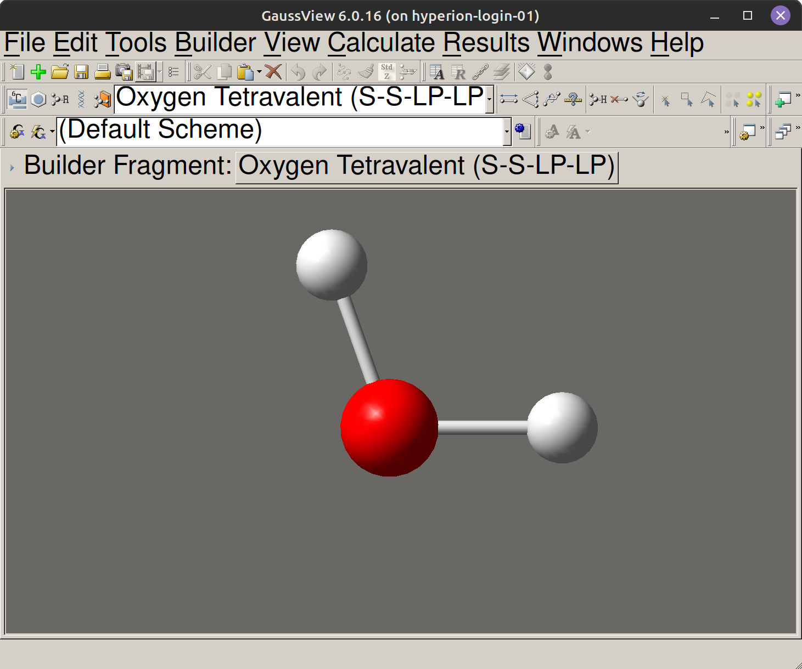
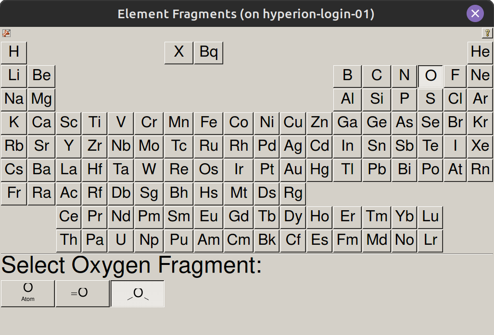
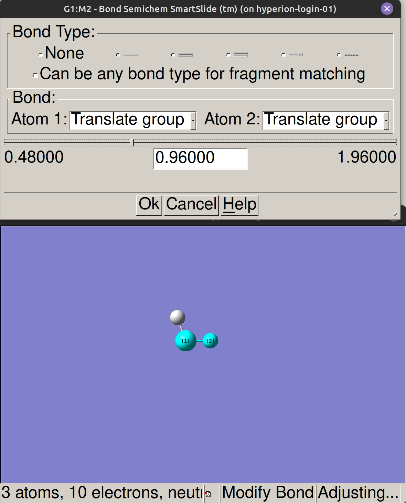
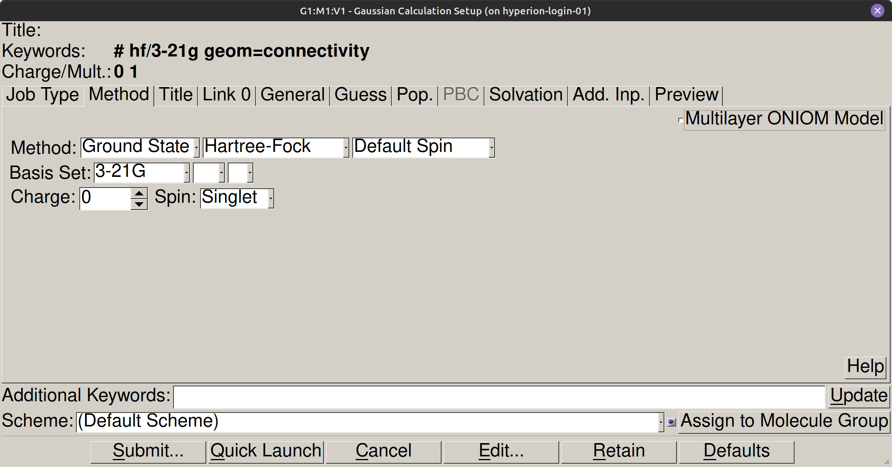
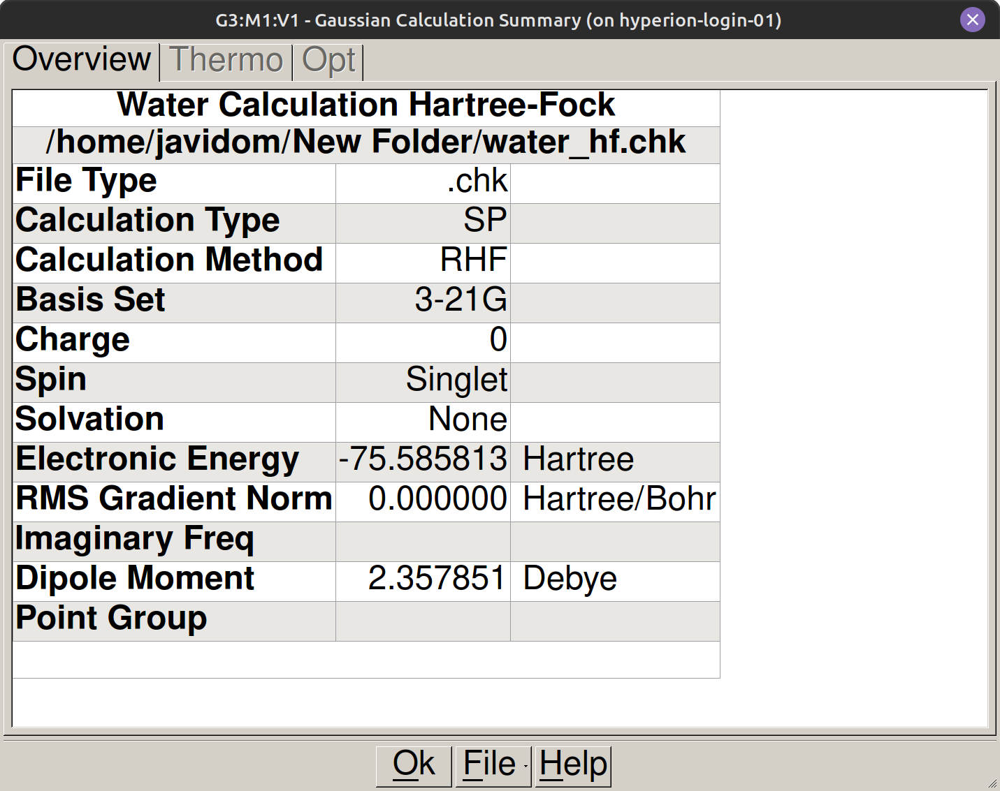
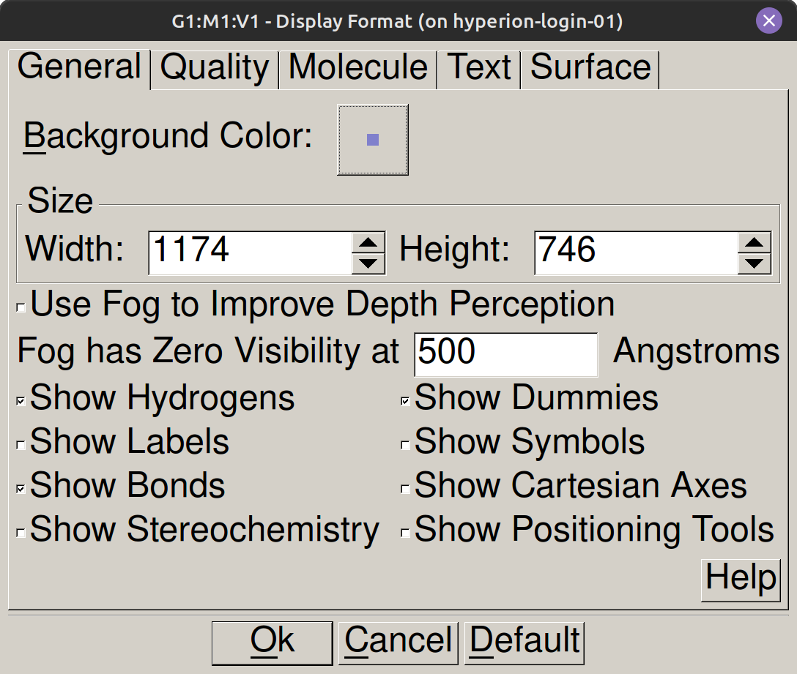

GaussView-ren sarrera#
Sarrera#
Gaussian-en kalkulu bat egiteko, lehenik eta behin, programari esan behar zaio molekula nola dagoen espazioan kokatuta. GaussView zeregin hori errazten duen interfaze grafikoa da: molekula-eredua eraikitzen dugu, kalkulua konfiguratzen dugu eta emaitzak bistaratzen ditugu eskuz fitxategiak editatu beharrik gabe.
GaussView irekitzea#
GaussView ikasgelako ordenagailuaren mahaigainetik edo sistemaren aplikazioen menutik irekitzen da.
Interfazea: zer ikusten duzu irekitzean#
GaussView-ren interfazeak lau lan-eremu ditu. Goiko aldean menu-barra dago, konfigurazio- eta bistaratze-tresnekin. Azpian tresna-barra dago, sarbide azkarreko ikonoekin. Erdiko eremua hiru dimentsioko bistaratze-leihoa da, non molekula eraiki, mugitu eta biratzen dugun saguarekin. Beheko panel batek denbora errealean hautatutako atomoen, atomoen arteko distantzien eta kalkuluaren egoerari buruzko informazioa erakusten du.


Molekula bat eraikitzea#
GaussView-n molekula bat eraikitzeko, tresna-barrako atomoaren ikonoa sakatzen dugu (Builder palette, View → Builder-tik ere eskuragarri) zatiak eta elementu kimikoak dituen panela irekitzeko. Nahi dugun elementua hautatzen dugu eta ezkerreko botoiarekin klik egiten dugu erdiko leihoan atomoa kokatzeko. Atomo gehigarriak lehendik dauden atomoetatik gertu gehitzean, programak loturak automatikoki sortzen ditu erradio kobalente estandarretatik abiatuta. Urarentzat (\(\text{H}_2\text{O}\)), oxigeno-atomo zentral bat jartzea eta bi hidrogeno angelu-posizioetan lotzea nahikoa da. Distantzia zehatzak Gaussian-en geometria optimizatzean doituko dira; beraz, hasierako marrazkiak konektibitate kimikoa soilik irudikatu behar du.


Abisua
Ez egin klik bikoitza ustekabean atzeko planoan: atomoak bikoizten ditu abisatu gabe.
Akatsak zuzentzea eta desegitea#
Azken ekintza desegiteko, Edit → Undo edo Ctrl+Z erabiltzen dugu. Atomo edo zati zehatz bat ezabatu nahi badugu, saguarekin hautatzen dugu eta Supr sakatzen dugu. Leihoa guztiz garbitzeko, Edit → Select All erabil dezakegu Supr sakatuta, edo lan-eremu berri bat ireki dezakegu File → New-tik.
Hidrogenoak automatikoki gehitzea#
Edit → Add Hydrogens aukerak marraztutako eskeletoa asetzeko beharrezkoak diren hidrogeno inplizituak automatikoki osatzen ditu. Emaaitzazko egitura beti berrikustea komeni da, esleipen automatikoa nahi den protonazio-egoerarekin bat ez etortzea gerta baitaiteke.
Molekularen inguruan mugitzea#
Egitura ikuskatzeko, bista biratzen dugu ezkerreko botoia sakatuta mantenduz eta kurtsorea mugituz. Zooma saguaren gurpilarekin doitzen dugu. Molekula bistatik galtzen badugu, tresna-barrako zentratze-botoia erabiltzen dugu. Hiru mugimendu horiekin, geometria erraz orientatzen dugu modelatzean eta emaitzak berrikustean.
Geometria ikustea eta doitzea#
Lotura-distantzia bat kontsultatzeko edo doitzeko, lotura-tresna (Modify Bond, bi esfera lotuta dituen ikonoa tresna-barran) edo kontsulta-tresna (Inquire, ? galdera-ikurra duen ikonoa) hautatzen dugu eta 3D ikuspegian bi atomoetan klik egiten dugu. Agertzen den leihoak uneko distantzia angstrometan erakusten du eta konektibitatea egiaztatzeko aukera ematen du kalkulua abiarazi aurretik.


Fitxategi bat ireki#
Fitxategi bat irekitzeko, File → Open menura jo behar dugu. Formatu ohikoenak .gjf (sarrerako fitxategiak) eta .log (Gaussianek sortutako irteerak) dira. Horri esker, saioen artean lanarekin jarraitu edo erreferentziazko egiturak aztertu ditzakegu.
Kalkulu bat konfiguratu#
Konfigurazio-panela Calculate → Gaussian Calculation Setup tik irekitzen dugu. Job Type fitxan, ataza hautatzen dugu: energia puntuala (Energy), geometriaren optimizazioa (Optimization) edo maiztasunen kalkulua (Frequency). Method fitxan, teoria-maila definitu dezakegu: metodo mekanokuantikoa (Hartree-Fock, B3LYP…) eta praktika bakoitzean adierazitako funtzio-basea. Title Card atalean, deskribapen labur bat sartzen dugu karaktere berezirik gabe. Azkenik, Charge & Multiplicity atalean, karga garbia eta spin-anizkoiztasuna ezartzen ditugu.
Abisua
Karga eta anizkoiztasuna beti berrikusi Submit sakatu aurretik. Akats batek kalkulu osoa baliogabetzen du.


Kalkulua abiarazi#
Parametroak konfiguratu ondoren, kalkulua lokalean abiarazten dugu Submit sakatuz. GaussViewek jarraipen-leiho bat irekitzen du denbora errealeko irteera-lerroekin. Iraupena segundo batzuetatik (molekula sinpleak eta gutxieneko baseak) minutu batzuetara (sistema handiagoak edo elektroi-korrelazioko metodoak) alda daiteke. Ez dago ezer gehiago egin beharrik kalkulua amaitu arte.
Kalkulua ondo amaitu dela egiaztatu#
Kalkulua amaitzean, irteera-fitxategiko azken lerroak Normal termination of Gaussian 16 eduki behar du. Horren ordez Error termination agertzen bada, kalkulua ez da behar bezala amaitu. Arrazoi ohikoenak hasierako geometria desegokia, konfigurazio bateraezina edo esleitutako memoria-muga gainditzea dira.
Adi
Emaitzarik idatzi aurretik, beti egiaztatu kalkulua behar bezala amaitu dela, lerro hau bilatuz: Normal termination of Gaussian 16
Emaitzak ikusi#
Emaitzak bi modutan kontsultatzen ditugu. Geometria optimizatua, dentsitate elektronikoa edo orbital molekularrak ikusteko, GaussViewen Results menua erabiltzen dugu. Results → Summary aukerak laburpen-koadro bat aurkezten du, metodoa, basea, kalkulatutako energia elektroniko osoa eta momentu dipolarra bezalako magnitudeekin. Balio numerikoak xehetasun guztiekin ateratzeko, zuzenagoa da .log fitxategia testu-editore batekin irekitzea eta dagozkion lerroak bilatzea. Praktika bakoitzaren gidoian adierazten dugu zein termino bilatu eta nola idatzi balio bakoitza.


Lana gorde#
Sarrerako fitxategia File → Save tik gordetzen dugu .gjf luzapenarekin. Komeni da nomenklatura argia erabiltzea, molekula eta teoria-maila identifikatzeko (adibidez, h2o_b3lyp_6311g.gjf), horrek saioan zehar kalkuluak antolatzea errazten baitu.
Bibliografia#
Gaussian 16, Revision A.03, M. J. Frisch, G. W. Trucks, H. B. Schlegel et al., Gaussian, Inc., Wallingford CT, 2016.
Koloreak eta itxura pertsonalizatu
:icon: gear
Atzeko kolorea View → Display Format menutik aldatzen dugu. General fitxan, Background Color ondoan dagoen laukian klik egiten dugu eta kolore zuria hautatzen dugu. Leiho horretan bertan, atomo-esferen tamaina pertsonaliza dezakegu Atom Size atalean, eta haien kolore-eskema Atom Colors atalean. Doikuntza horiek ez dituzte kalkuluak aldatzen, baina atzeko plano zuria erabiltzeak praktiken memoriarentzako kaptura garbiak lortzea errazten du.

